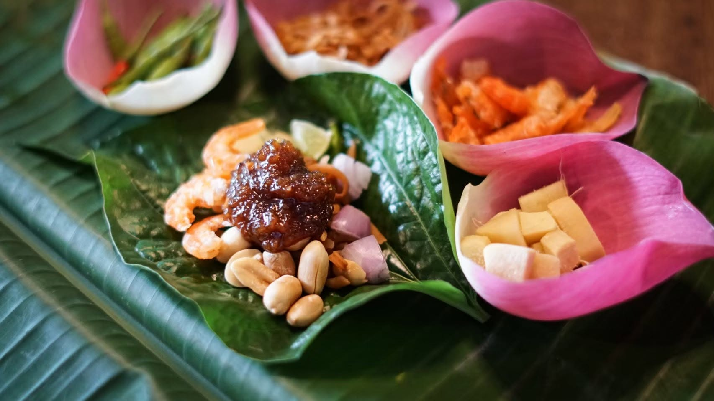
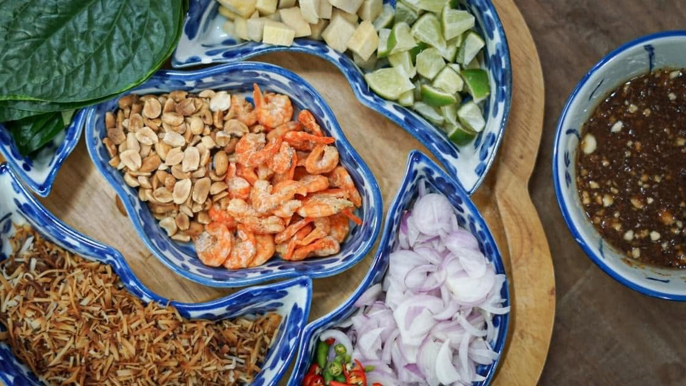

เมี่ยงคำOne leaf. One perfect bite.
เราตั้งชื่อร้านตามคุณยาย และตามอาหารจานที่ท่านสอนเราไว้ — เมี่ยงคำ ที่รวมรสหวาน เปรี้ยว เค็ม เผ็ด และขม ไว้ในใบชะพลูเพียงคำเดียว ทำด้วยมือ ทีละน้อย อย่างที่ท่านเคยทำ
We are named for our grandmother, and for the dish she taught us — miang kham, where sweet, sour, salt, heat and bitter all meet in a single fold of betel leaf. Made by hand, in small batches, the way she did.

แปดเครื่องเมี่ยงAnatomy of a perfect bite
เมี่ยงคำไม่ได้ปรุงสุกอยู่ในครัว แต่ประกอบขึ้นตรงหน้าโต๊ะ ด้วยมือของคุณเอง ลองแตะดูแต่ละเครื่องเคียง แล้วจะรู้ว่าสิ่งเล็กๆ เหล่านี้ให้อะไรกับเราบ้าง
Miang kham isn't cooked — it's assembled, at the table, by you. Open the set and hover each ingredient to see what it gives you.
เคล็ดลับHover an ingredient to see its health benefit.

ของขายดีLoved at the table
จานโปรดที่ทุกโต๊ะเรียกหา คัดมาให้แล้วจากครัวของเรา
The dishes every table asks for — picked from our kitchen.
สามชั้นวางของเราWhat we make
จากใบชะพลูสดในตะกร้า ถึงไหหมักที่รอเวลาของมัน ทุกอย่างมีที่ทางของตัวเอง
From fresh betel leaves to jars that wait their turn — everything has its place.
ทำมือทุกขั้นตอนSlow, by hand, in small batches
ในครัวของยายไม่มีทางลัด มีเพียงเวลาและความตั้งใจ
No shortcuts in Grandma's kitchen — only time and care.
๑ · คัดสรร Source
ใบชะพลู น้ำตาลปี๊บ และพริก จากเกษตรกรไทยที่เรารู้จักชื่อทุกคน
Betel leaves, palm sugar and chillies from Thai growers we know by name.
๒ · ตำ Pound
ครกหิน ไม่ใช่เครื่องปั่น น้ำมันหอมจึงค่อยๆ คลายตัว และเนื้อน้ำพริกยังคงความหยาบที่พอดี
Stone mortar, never a blender — so the oils release slow and the paste keeps its grain.
๓ · คั่ว Roast
มีเพียงไฟจริงเท่านั้นที่ดึงกลิ่นควันและความหวานไหม้ออกมาจากพริกและหอมแดง
Real heat coaxes the smoke and caramel out of every chilli and shallot.
๔ · บรรจุ Jar
บรรจุในวันเดียวกัน ปิดผนึกด้วยมือ ไม่มีวัตถุกันเสีย ไม่มีอะไรต้องปิดบัง
Filled the same day, sealed by hand. No preservatives, nothing to hide.
เสียงจากลูกค้าWhat our customers say
รีวิวจริงจากลูกค้าบนเฟซบุ๊ก / Real reviews from our Facebook page
สูตรอาหาร ของเข้าใหม่ และความคิดถึงRecipes, restocks & a little nostalgia
จดหมายสั้นๆ ส่งถึงกันเป็นครั้งคราว ไม่เกินเดือนละครั้ง
A gentle note now and then — never more than once a month.